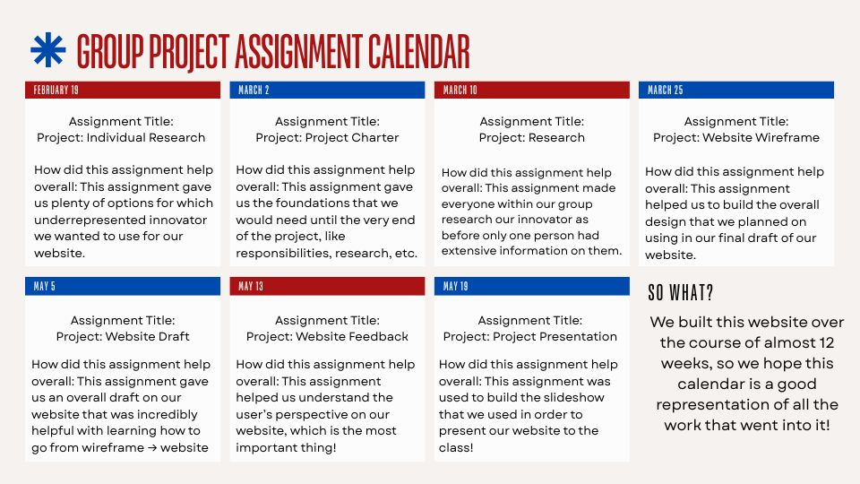

This page will show a brief overview of the process of making the site that you're currently viewing!
During this step, we came together as a group to discuss who would take what responsibility. More information regarding the planning steps can be found on our Team page!
Our group used Figma to create a general wireframe for how we wanted our site to look. We used this wireframe as a first step into making a real, usable website.
After we had our wireframe, we started to create the real website. We used HTML and CSS files in order to complete this task. We used Github in order to make our website live for users outside of our group.
Once the website was functional, we focused on making it visually appealing and user friendly. We used a Google Survey in order to test the design of our website and gain feedback on how to make it better.
We used this calendar to keep track of our progress and make sure we were on track to finish the project on time.
